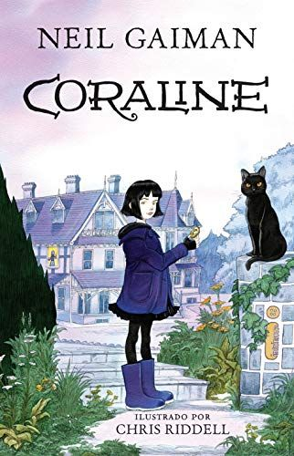

Autor(a): Neil GaimanGênero: Literatura infantil, Fantasia sombria, Conto de fadas, Ficção paranormal, Terror, Literatura fantástica Editora: Intríseca Ano: 2002 Páginas: 224
Sinopse
Certas portas não devem ser abertas. E Coraline descobre isso pouco tempo depois de chegar com os pais à sua nova casa, um apartamento em um casarão antigo ocupado por vizinhos excêntricos e envolto por uma névoa insistente, um mundo de estranhezas e magia, o tipo de universo que apenas Neil Gaiman pode criar.
Ao abrir uma porta misteriosa na sala de casa, a menina se depara com um lugar macabro e fascinante. Ali, naquele outro mundo, seus outros pais são criaturas muito pálidas, com botões negros no lugar dos olhos, sempre dispostos a lhe dar atenção, fazer suas comidas preferidas e mostrar os brinquedos mais divertidos. Coraline enfim se sente... em casa. Mas essa sensação logo desaparece, quando ela descobre que o lugar guarda mistérios e perigos, e a menina se dá conta de que voltar para sua verdadeira casa vai ser muito mais difícil ― e assustador ― do que imaginava.
Resenha do livro
VIDEO
Comentário (com spoiler)
Me apaixonei por Coraline pelo filme que de primeira me traumatizou quando criança e depois eu passei a amar. Eu tinha muitas expectativas já que ja tinha visto o filme pelo menos 5 vezes, e todas as expectativas foram cumpridas e se tornou um dos meus livros favoritos. Mesmo sendo diferente do filme, os dois são otimos.